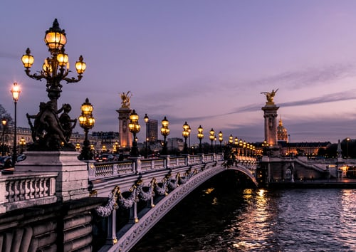
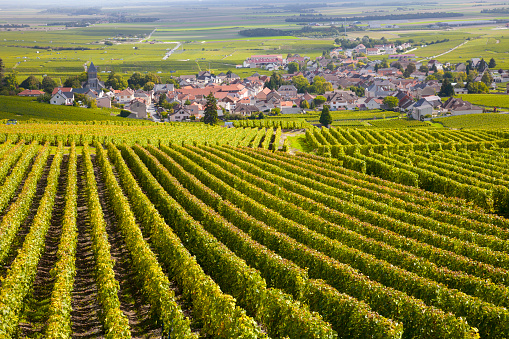
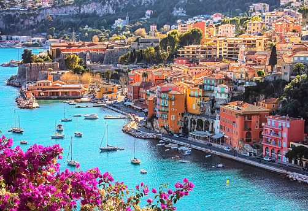

Have you ever been to France?

France is one of the most beautiful countries to go on vacation in.
Some of the beautiful places to visit when in France accoding to my compilation.
- Eifel Tower.
 The Eiffel Tower is a wrought-iron lattice tower on the Champ de Mars in Paris, France. It is named after the engineer Gustave Eiffel, whose company designed and built the tower.
The Eiffel Tower is a wrought-iron lattice tower on the Champ de Mars in Paris, France. It is named after the engineer Gustave Eiffel, whose company designed and built the tower.
The Arc de Triomphe honors those who fought and died for France during the French Revolution and the Napoleonic Wars, with the names of all French victories and generals inscribed on its inner and outer surfaces. Under its vault lies the Tomb of the Unknown Soldier from the First World War.
- Burgundy Vineyard

Burgundy wine is made in the Burgundy region of eastern France, in the valleys and slopes west of the Saône, a tributary of the Rhône. The most famous wines produced here—those commonly referred to as "Burgundies"—are dry red wines made from pinot noir grapes and white wines made from chardonnay grapes
- Endless Lavender field
 Image result for endless lavenderfield in france
Located between the valley of Durance and the Gorges of Verdon, the region is home to many fields which produce both lavandin as well as true lavender. To admire the most beautiful fields of lavender in Provence, you can also visit Luberon or the areas surrounding Mont Ventoux, in Pays de Sault.
Image result for endless lavenderfield in france
Located between the valley of Durance and the Gorges of Verdon, the region is home to many fields which produce both lavandin as well as true lavender. To admire the most beautiful fields of lavender in Provence, you can also visit Luberon or the areas surrounding Mont Ventoux, in Pays de Sault.
- Ville Franche sur-mer-village.

Image result for villefranche sur mer
Villefranche is a nice little escape, because there aren't high-rise buildings and ridiculously expensive stores on every corner, like in Monaco and Nice. It has much more of a quaint and relaxing feel to it. ... That being said, it's definitely worth it to spend a day both in Monaco and Nice
- Get time and vidit France because
France, in Western Europe, encompasses medieval cities, alpine villages and Mediterranean beaches. Paris, its capital, is famed for its fashion houses, classical art museums including the Louvre and monuments like the Eiffel Tower. The country is also renowned for its wines and sophisticated cuisine. Lascaux’s ancient cave drawings, Lyon’s Roman theater and the vast Palace of Versailles attest to its rich history